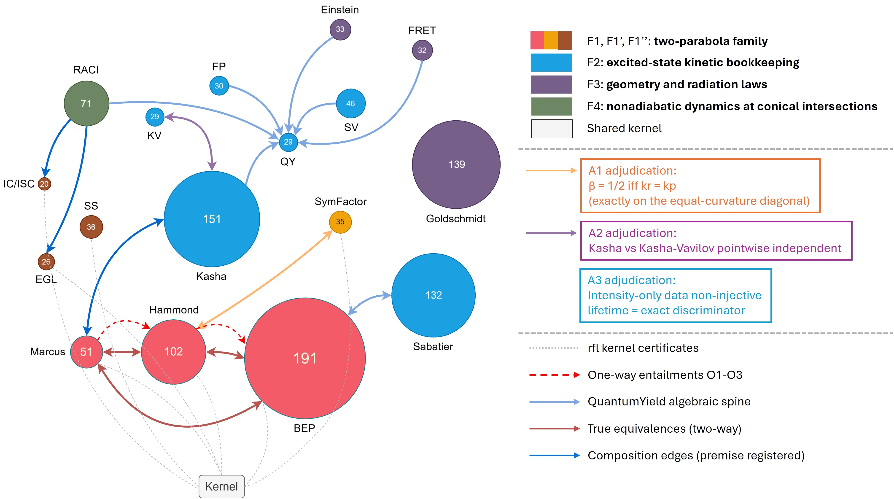
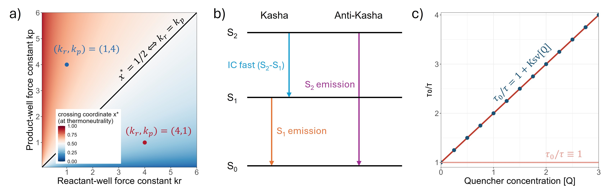
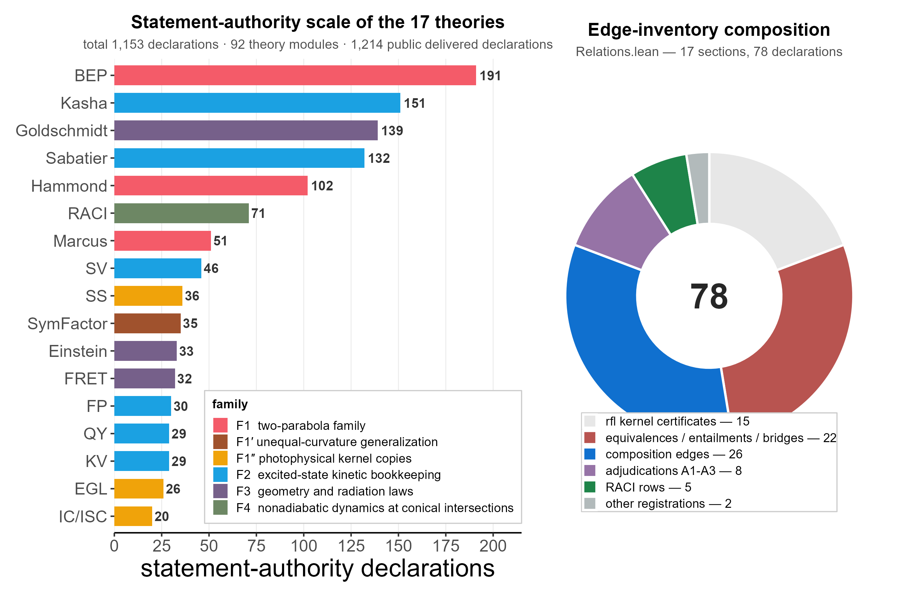

Formalizes seventeen photochemical/photophysical theories over a shared kernel in Lean 4, encoding verified relations among all 136 theory pairs.
Abstract
Chemistry's phenomenological theories multiply with its observables: the same physical reality is repeatedly named in different measurement contexts, and the relations among theories have never had an auditable carrier. Here we present PhotoLean, a machine-checked genealogy of seventeen photochemical and photophysical theories formalized in Lean 4 over a shared kernel. Every pair of theories carries either a verified relation (equivalence, implication, composition with registered premises, definitional certificate) or a registered reason for its absence, covering all 136 pairs. Three adjudications resolve inherited conflations with if-and-only-if boundaries and witnesses: the symmetry factor $β$ equals one-half exactly when reactant and product force constants coincide; Kasha's rule and the Kasha-Vavilov rule agree only under closed quantification with a loss channel; and intensity-only Stern-Volmer data cannot distinguish static from dynamic quenching, whereas the lifetime channel discriminates exactly. As proposition generation shifts to machines, such machine-checked relational ledgers offer a replicable audit layer for theory itself.
Problem
Chemistry's phenomenological theories multiply with observables, repeatedly naming the same physical reality across measurement contexts, yet relations among these theories have no auditable, verifiable carrier.
Approach
Seventeen photochemical and photophysical theories are formalized in Lean 4 over a shared kernel (PhotoLean), spanning 92 theory modules and 1,153 statement-authority declarations delivered verbatim. Each of the 136 theory pairs carries either a verified relation (equivalence, implication, composition, definitional certificate) or a registered reason for its absence. Fifteen rfl kernel certificates pin definition bodies so that drift raises a compilation alarm, and fidelity probes check that authoritative statements appear word-for-word.

Figure 1: The PhotoLean relation graph: seventeen photochemical/photophysical theories on one machine-checked graph. Nodes are the seventeen delivered theories plus the shared kernel (white); the number inside each node is its count of statement-authority declarations (total 1153, all delivered verbatim; 17/17 fidelity probes report zero signature differences), and node size scales with that count
Results
All 17 fidelity probes pass with zero signature discrepancies, and the strict gate returns PASS. Three adjudications resolve inherited conflations with iff boundaries: β=1/2 holds exactly when reactant and product force constants coincide; Kasha's rule and the Kasha–Vavilov rule agree only under closed quantification with a loss channel; and intensity-only Stern–Volmer data cannot distinguish static from dynamic quenching, while the lifetime channel discriminates exactly.

Figure 2: Three adjudication classes: literature conflations decided with machine-checked boundaries. a , A1 , adjudicated conflation of the symmetry factor \beta=1/2 . The colour map displays the thermoneutral crossing coordinate x^{*}=\sqrt{k_{p}}/(\sqrt{k_{r}}+\sqrt{k_{p}}) over the force-constant plane (k_{r},k_{p}) ; this closed form is unique on [0,1] and is obtained without calculus. The co

Figure 3: Delivery scale, edge-inventory composition, and verification gates. Left: the statement-authority footprint of each theory (1,153 declarations spanning 92 theory modules; 1,214 public delivered declarations; every authority statement delivered verbatim with zero probe discrepancies), coloured by family. Right: the composition of the 78 declarations that constitute the machine-checked edg